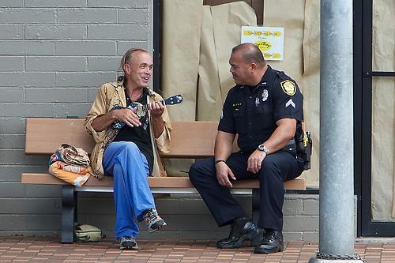
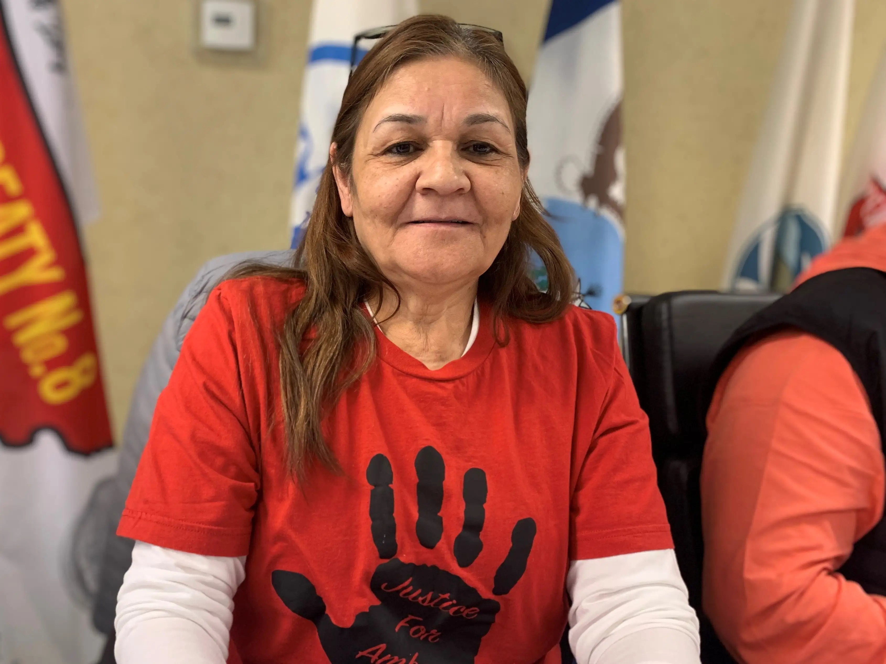

Why Representation Matters in True Crime
The stories we tell shape how communities are seen. A look at why diverse voices in true crime aren’t optional—they’re essential.
April 10, 2026 Read More →Deep dives, reflections, and conversations about justice, advocacy, and the stories behind the cases.

Leon Ford was shot by police after being mistaken for a suspect. He survived, but what followed exposed deeper issues within policing, accountability, and systemic failure.
💬 How much of “suspicion” is based on behavior, and how much on perception?+
Read Article →
The stories we tell shape how communities are seen. A look at why diverse voices in true crime aren’t optional—they’re essential.
April 10, 2026 Read More →
Why communities and policing struggle to align—and what accountability actually looks like in practice.
April 8, 2026 Read More →
Over 2,400 inmates in the U.S. are currently on death row, but the debate goes beyond numbers—touching on bias, wrongful convictions, and irreversible consequences.
April 6, 2026 Read More →
A survivor of long-term domestic violence defended herself—but her claim of self-defense was denied.

A young Indigenous mother’s final moments were recorded—yet her case remains unsolved.

A rising Black Panther leader was killed during a police raid tied to federal surveillance efforts.
Get new discussions, deep dives, and stories that matter—delivered directly to you.